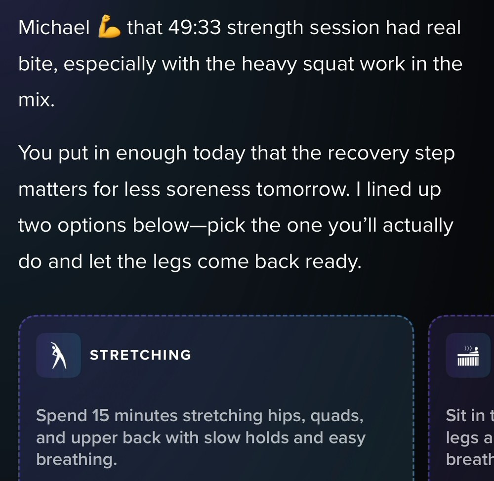
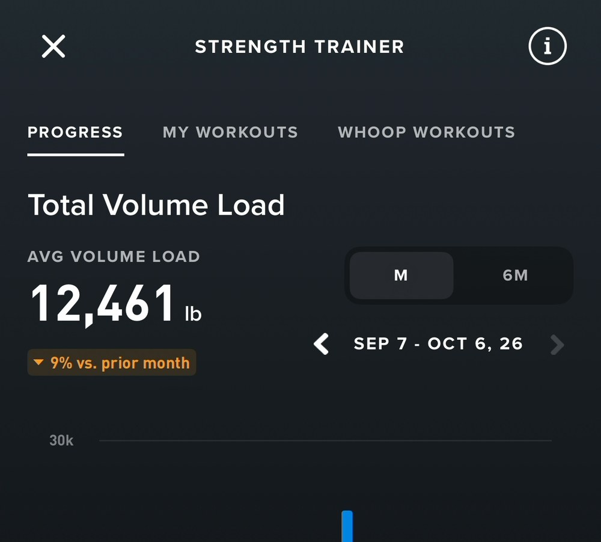
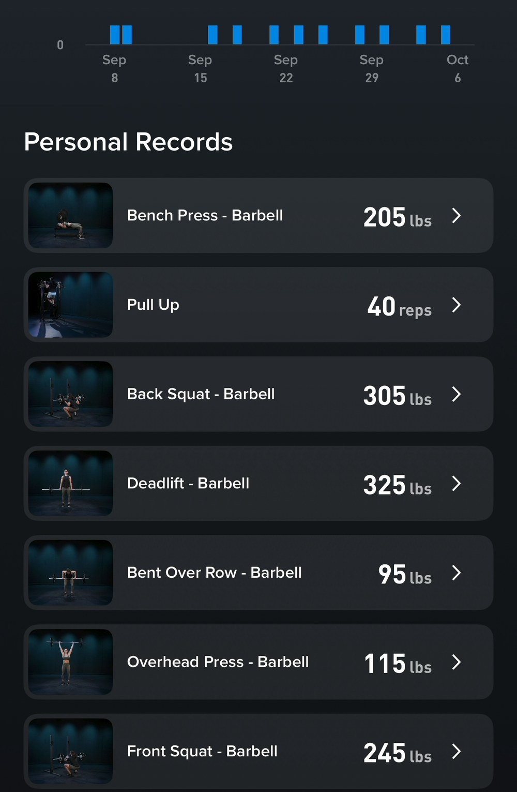
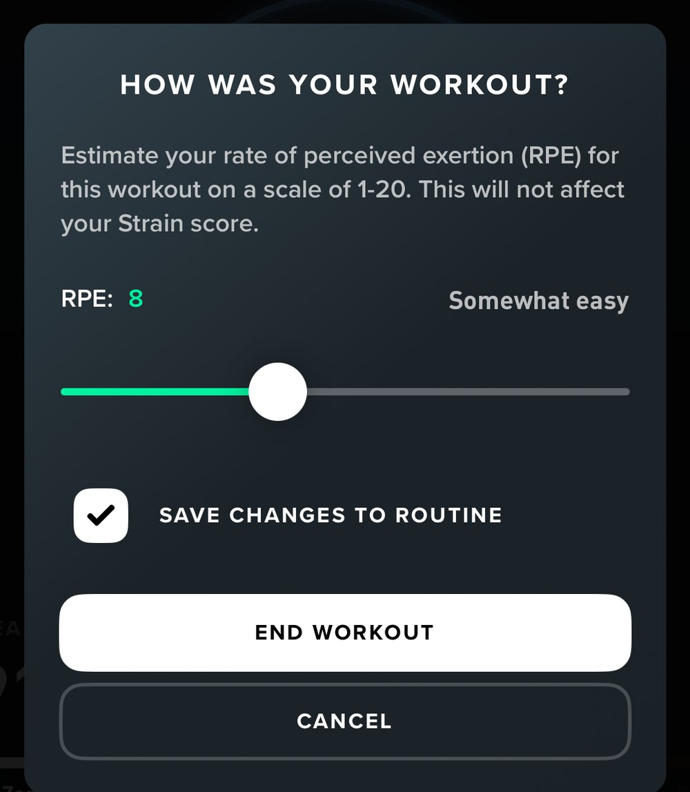
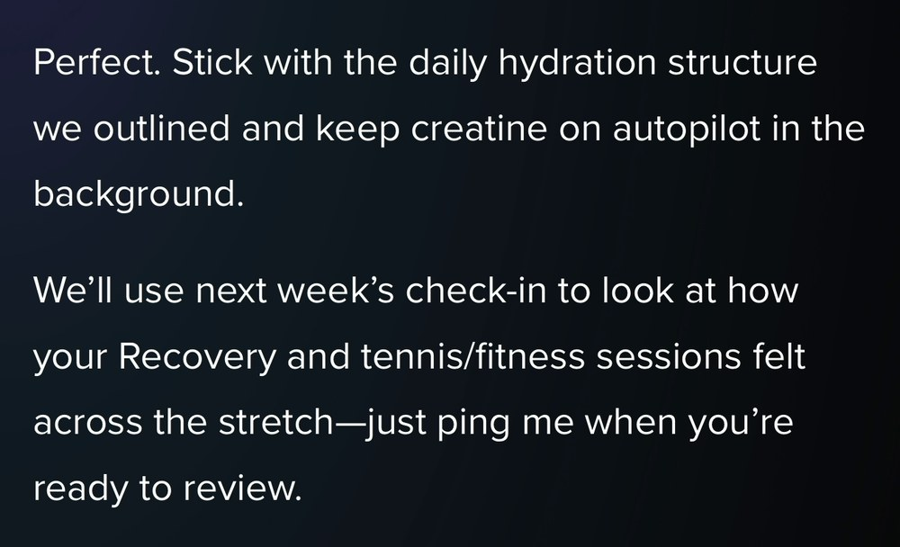
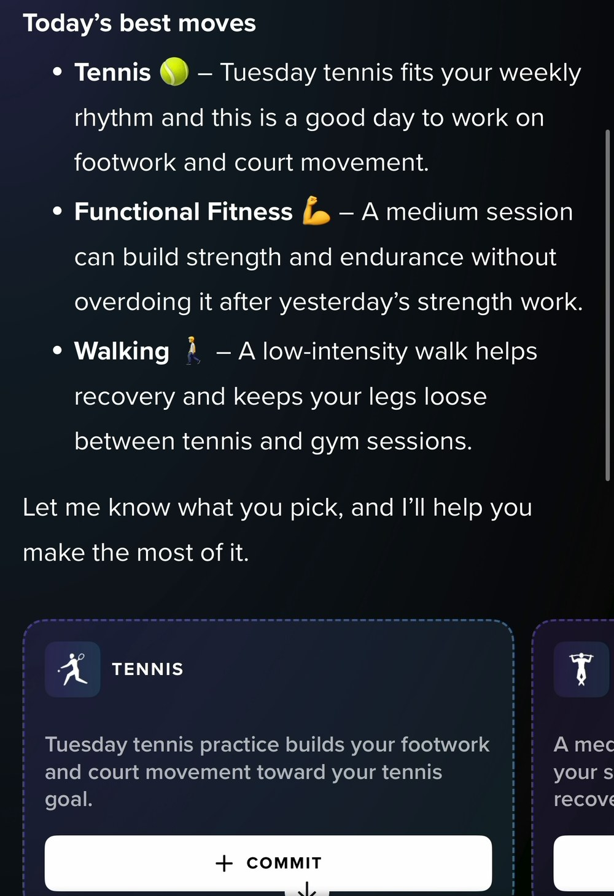

MWG Advisory · The Loop Audit · First run
Whoop, scored against the rubric
Whoop shipped a coaching upgrade mid-study, v6.0 to v6.1. I had been recording my own use since September, so instead of asking whether the upgrade is good, I scored before against after.
56.0 at v6.0, 68.0 at v6.1 — twelve points in five weeks, and still two short to move categories from “Useful tool” to “Strong but leaky” in my rubric. Every node in the loop has a presence in the app. The joins between them less so, and the weakest links are on either side of one node: Progress, the lowest score on the card and unmoved by the release.
Whoop already holds every layer of a progression hierarchy — a Healthspan estimate in years, Strain and Recovery, zone minutes, strength volume load, individual lift records. But my lived in-app experience sees them far too often in silos. No “progress” layer rolls up into the one above it, and nothing rolls back down into tomorrow's assignment. That is data, not a progression system.
So the ask is not more measurement, and not a better coach. It is a goal structure the rest of the loop can write to and read from.
An instrument, pointed at a moving target
The Loop Audit scores whether a health product actually changes the user's state, and whether it holds their attention while doing it. Both axes have to be positive. This is its first complete run, and the subject changed underneath me.
I recorded thirty-six sessions of v6.0 between September 3rd and 12th. By the 19th the app read v6.1, with a visibly different coach. So this is a before and after — the one thing a store listing, a press release and a launch review all cannot produce. Forty-seven recordings and twelve screenshots in total, across seventeen dated days ending October 6th. Every score is marked O, observed in use.
One member, one body, five weeks. Sharp for mechanisms, blunt for sizing. Eleven recordings cover v6.1 — enough to establish that a capability exists and to catch it failing, not enough to say how often it fails. One session behind the scores was lived rather than recorded, and I flag it where it is used.
Eight dimensions
Rated 0–5: 0 absent, 1 cosmetic, 2 functional, 3 contextual, 4 adaptive, 5 compounding. Pale bar is v6.0; solid bar is v6.1.
| Dimension | Wt | v6.0 → v6.1 | Δ | What decided it |
|---|---|---|---|---|
| Diagnosis | 10% | 4 → 5 | +1 | A constraint its sensors cannot detect entered the model from one sentence, became an anatomical rule rather than an activity blacklist, survived five days, and was applied to a session type we never discussed — alongside recovery and a 100°F forecast, in the same breath. A model of me getting richer with use. |
| Assignment | 15% | 3 → 3 | — | Delivery improved — the coach writes its own commitment cards and they land on the home screen. But the thing that generates those cards runs on my stated goals, my weekly rhythm and last night's physiology, and reads no constraint the coach has accepted. See section 06. |
| Action enablement | 10% | 4 → 4 | — | Guided player with loads and rest timers, live tracking, workout capture from a photo, a generator, a library of programmed sessions. Enablement is not the problem. Not 5 because the abundance is: a prescribed session, a committed activity and a saved template are three objects reached by three paths. |
| Verification | 15% | 2 → 3 | +1 | At v6.0 a session run in Whoop's own player left its commitment open underneath it. At v6.1 the logged activity carries the Recommended Activity tag and the link survives a manual log. The ceiling is what it reports: “Stretching: your performance is calculated and ready for review.” The activity is processed. The commitment is never reported as kept, and nothing is credited anywhere. |
| Coaching & adaptation | 15% | 3 → 4 | +1 | Reasons across days by number, runs a multi-week variable test, retires one variable and promotes another, owns its errors. Capped at 4 by the asymmetry this audit is about: it reaches me brilliantly in conversation and reaches no other surface at all. |
| Progression & masteryBinding | 15% | 2 → 2 | — | The lowest score and the binding constraint. Every readout a progression system would need exists and none of them are connected to each other or to the loop. Functional, not contextual. Section 05. |
| Re-entry & cadence | 10% | 2 → 3 | +1 | At v6.0, reliable pushes that referenced my physiology. At v6.1 the coach reopened a specific experiment it had set up days earlier, unprompted and by name. Capped at 3: that is the only long-horizon re-entry it performs, and only for commitments it made to itself. |
| Trust, agency & safety | 10% | 3 → 4 | +1 | Clinical surfaces stay solemn. Told its log was wrong, it named the conflict, said “that overlap error is on me,” and repaired it. It discloses against its own interest, offers to stop collecting data it judges to be noise, answers the export question straight, and escalates to a doctor when an injury warrants it. Not 5 only because I never walked the cancellation path. |
| Total | 100% | 56 → 68 of 100 | +12 | Both in Useful tool (50–69). Strong but leaky opens at 70. |
Twelve point increase but not enough to cross category bands. Progression carries 15% and sits at 2 — moving it one level is worth three points on its own and clears the band. Nothing else on the card is that close to the line, and nothing else failed to move.
One score rests heavily on a single episode: Diagnosis at 5. If you want to be hard on this card, be hard there — knock it to 4 and v6.1 reads 66. I think 5 is right, and I would rather state the sensitivity than pretend the total is sturdier than it is.
The ledger, scored per stage
Friction suppresses improvement and attention at once, and it hides from the eight dimensions because it is not a job the product does — it is a cost I pay. Scored 0 (negligible) to 3 (blocks the stage), at v6.1.
The pattern is one-directional. Every stage the sensor owns costs nothing; every stage that needs me to carry state between screens or between days costs two or three.
Where it scores 4 and 5
Four dimensions sit at the top of this card, and they share a property: each is something the coach does inside a conversation. The intelligence is not the constraint. It has never been the constraint.
Diagnosis — 5
This week I hyperextended an elbow playing tennis and told the coach. It re-scoped the whole week — no tennis, no golf, and it told me bluntly: this week I am a lower-body and conditioning athlete. It set the exclusion rule in anatomical terms rather than by activity (nothing that extends or flexes the elbow joint), which generalizes to movements neither of us had named. It read my gym's own planned workouts for substitutions that fit. And it set escalation criteria: watch recovery and pain, see a doctor if either moves the wrong way.
The constraint was invisible to the sensor. Whoop has no idea my elbow is hurt and no way to find out. It handled it because I said it out loud, and was able to reference it in chat later in the week.
That exchange is the one session behind this scorecard I did not record, so there is no frame of it here. The rule it produced is on tape five days later, in section 06.
Coaching & adaptation — 4
It reasons across days by number, and it runs real experiments. Days after setting up a supplement trial it opened with “You'd asked me to keep an eye on creatine, so I wanted to check in,” reviewed the result, judged the variable low-signal, promoted a different one, wrote a seven-day structure and set a review date. That is the strongest single stretch of coaching in five weeks of tape.
Assignment delivery — the half that improved
At v6.0 the only way to make a commitment was to take a pre-written chip from the Daily Outlook. At v6.1 the coach writes its own.

September 30, 2:10 PMEach card carries a Commit button, and committed items render on the home screen in a dashed row beside finished work. The product now has a visual grammar for “intended but not yet done.”
Trust, agency & safety — 4
The quiet strength of the product, and the one I expected least. It owns its errors, offers to stop collecting data it judges to be noise, and answers the question it has no commercial reason to answer.
![Whoop coach thread. A member message reads: Can I export my data? The coach replies: Yes, you can export your WHOOP data, Michael. Here's how to do it in the app. On iOS: open WHOOP, tap More in the bottom navigation, go to App Settings then Data Export, confirm your email and tap Create Export. On Android: open WHOOP, tap More, tap Data Export, confirm your email and tap Create Export. You'll get an email within about 24 hours with download links, CSV files, covering your full WHOOP history: sleep, strain, recovery.](img/ev-export.jpg)
October 6, 10:24 AMNo deflection, no routing to support, no retention save. For a subscription built on accumulated personal data, a straight answer here is not nothing.
Progress is data, not a node
Whoop measures progression at every level a coaching product would need. It has no visible structure that relates those levels to each other, and no path by which any of them reaches the rest of the loop outside of the Weekly Plan. That is the difference between a set of readouts and a progression system, and it is the lowest score on the card.
A working progression node warehouses the member's goals in a hierarchy and connects that hierarchy back to the other nodes. Here is the hierarchy Whoop could assemble today, entirely from things it already holds — and where each layer actually lives.
Every row of that table exists and works. Not one of them actively rolls up into the row above it, and not one rolls back down into an assignment outside of chat. Ask the product the question a progression system exists to answer — did this week's work move me toward the thing I actually care about? You might get the answer in chat on one day, but there is no visual path from a finished session to a volume-load trend, from a volume-load trend to a strength sub-goal, or from a strength sub-goal to a year of Healthspan.

Strength Trainer › ProgressA month-over-month trend with a direction on it. Today it reads nine percent down — a fact about my training that no coach message has ever raised.

Personal recordsDurable, specific, and it does not reset on Sunday. The raw material of a mastery system, filed where nothing can reach it.
I found the records board on the last day of a five-week study in which I recorded forty-seven sessions and was actively hunting for exactly this. That is not a discoverability footnote. A surface that a motivated reviewer cannot find is not performing a job in the product, however good it is.
Both joins into Progress are broken
The node scores 2 because it is functional in isolation. The reason it is the binding constraint is that the two joins on either side of it are the weakest in the loop.
Verification does not credit it. A committed, completed act produces a notification — “Stretching: your performance is calculated and ready for review” — and then stops. The act is processed; nothing accrues. The same break shows up at the finest resolution the product has, where it asks me for the one number only I can supply and then rules it out of the system it feeds.

The guided player, on ending a session“This will not affect your Strain score.” The checkbox below it writes my real loads back into the workout file — the one write-back in the product, and it points at a template rather than at a goal.
And it does not restart the loop. Nothing accumulated ever becomes the reason for tomorrow's assignment. The clearest instance is the experiment the coach designed itself, with a horizon and a review date attached.

October 1, 12:23 PM“Just ping me when you're ready to review.” It set the horizon and agreed the review, then handed me the job of coming back for it — because there was no object holding the progress to come back to.
Meanwhile the one progression artifact the product pushes to the front of the experience is a full-screen celebration of a day streak. Mine passed 2,200 during the study, top 0.4% of members. It counts days the strap was on my wrist. It counts nothing I agreed to do and then did.
The nodes work. Tighten the joins.
Twelve points in five weeks is a real release, and it bought exactly what it should have: four nodes moved and none of them is now weak. What the scorecard points at is the wiring between them, and the clearest proof of that arrived on the last day of recording.
October 6th, the morning after the elbow. On the left is what the Daily Outlook opened with. On the right is the same coach, one tap later, after I picked one of its own suggestions.

10:43 AM — the card generatorTop pick, one tap from committed, the day after “no tennis.” Justified by my weekly rhythm and my tennis goal. The elbow is not mentioned, because this surface has never heard of it.
![Whoop coach response after the member chose a functional fitness session. It reads: Nice. With 78% green Recovery and 100 degree heat outside, the smart play is: keep it indoors, well-hydrated, and cap strain around 11 to 13 today, you're at 10.4 average for the week. Bias toward mixed cardio and strength, not a pure smash-fest: think breathing heavy but never redlining. Protect the elbow: avoid heavy presses or hanging work that loads full extension; favor rows, goblet squats, hinges, core, bike or rower.](img/ev-elbow.jpg)
10:44 AM — the coach“Protect the elbow: avoid heavy presses or hanging work that loads full extension.” Five days on, unprompted, applied to a session we never discussed. It remembered everything.
I had this backwards for most of the study. I assumed declarations expired overnight; they do not. The same split explains the Daily Outlook offering tennis on a declared rest day, a week I built on a Monday going uncited every morning after it, and a coach that had my finished session the whole time opening by coaching me toward it. All of it looks like forgetting from the outside. None of it is.
Three joins, ranked
Which puts the whole scorecard in one frame. Eight nodes, all functional. Three joins between them that a member has to carry by hand — and two of the three are the ones on either side of Progress.
- Verify → Progress. The worst of the three. A completed, verified commitment credits nothing that persists. Fixing it is the difference between a scorecard that reads 68 and one that reads 71.
- Progress → Re-enter. Nothing accumulated becomes the reason to come back, so the coach asks me to remember for it.
- Diagnose → Assign. The card generator cannot see a constraint the coach has accepted, which is a wiring problem with a safety edge: it offered me a committable tennis session twenty-four hours after its own coach ruled out tennis and told me to watch for signs I should see a doctor.
That is one object, not four features, and it is upstream of everything still unresolved on this card. Give the member a hierarchy that holds a meta-goal, its sub-goals and their measures; let a kept commitment credit a measure; let a measure roll up; let the coach read the whole thing before it writes tomorrow. Progression stops being a filing cabinet. Verification gets somewhere to put its answer. Re-entry gets a reason that is not a reminder.
Twelve points came from making the nodes more capable. The next twelve are in the joins between them.